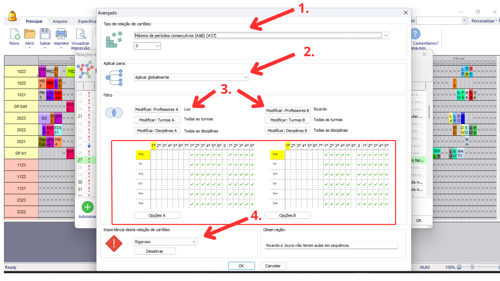

Detalhes do post:
Proibição de Aulas Sequenciais entre Docentes:
Descrição:O Professor X não pode ter aulas em sequência do professor Y
Para resolver esse tipo de situação devemos restringir a colocação dos cartões das aulas usando as relações entre cartões avançados

1- Selecione o tipo de restrição “Máximo de períodos consecutivos (A&B) (#37)”, na caixa de texto logo abaixo digitar o número máximo de períodos consecutivos que os cartões de aula dos professores X e Y podem ser alocados juntos (neste caso vamos digitar “0”, pois não queremos que as aulas destes professores sejam colocadas consecutivamente).
2- Selecionar a opção “Aplicar Globalmente” visto que a restrição deve atingir os professores, turmas e disciplinas selecionadas no filtro.
3- Utilize o filtro “Modificar Professores” no lado A selecionando o professor X e o filtro “Modificar Professores” no lado B selecionando professor Y; Os demais filtros “Modificar Turmas” e “Modificar Disciplinas” de ambos os lados podem permanecer aplicando-se a todos, ou selecionar especificamente as turmas e disciplinas que o professor X e Y lecionam.
Selecionar nos quadros de horários A e B os horários que o professor X e Y não devem ter aulas em sequência.
4- Selecione a importância da Restrição, entre: baixa, normal, alta, rigoroso ou otimizar; de acordo com a importância a ser atribuída a essa relação na instituição.
Também escreva uma observação que facilite a identificação da restrição e explique seu objetivo.
Clique em “ok” no canto inferior para salvar a relação.